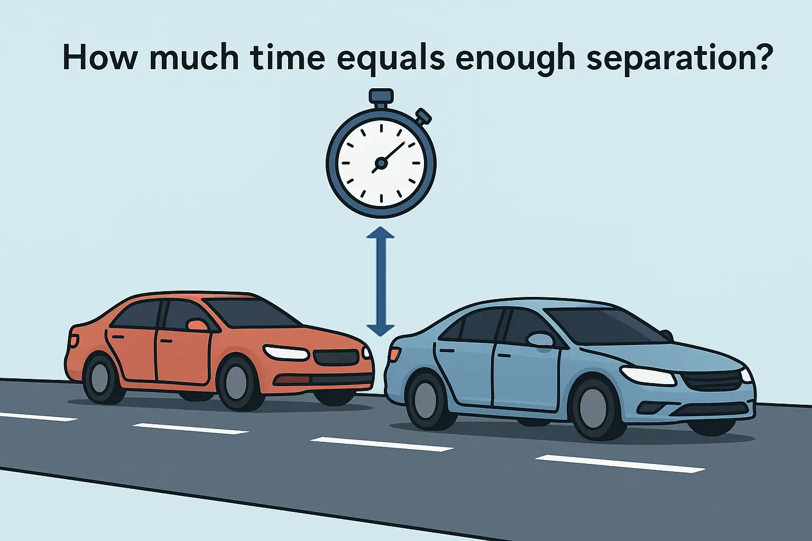
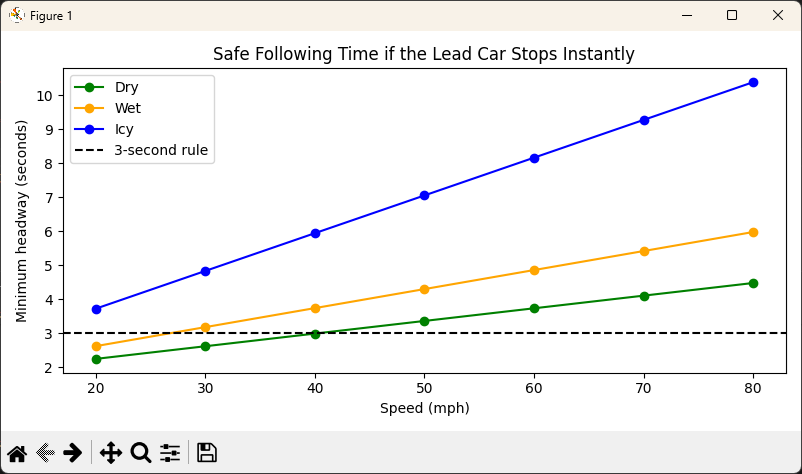

Rethinking the Three-Second Traffic Rule: When Physics Says It’s Not Enough

While researching why car insurance rates are so extremely high in Las Vegas, I started thinking about the three-second rule and its validity. As I’ve always heard, the three-second rule refers to how far you should be behind a car in traffic. The idea is that you pick out a fixed roadside marker and you are supposed to pass that marker at least three seconds after the car in front of you. That rule is simple enough, yet deceptively deep once you unpack the physics.
“Three seconds is a rule of thumb. Physics reveals the truth.”
I have always found that kind of rule fascinating because it is both universal and situational. It works whether you are cruising at 25 mph through town or flying down I-5 at 75 mph. At least, that is what the driver’s manuals claim. But how does it hold up when you actually model two cars in motion: one stopping suddenly, the other reacting with a delay? That is where the math and a little Python simulation come in.
The Thought Experiment
Imagine two cars traveling in a straight line, one following the other at highway speed. The lead car doesn’t just brake; it comes to an immediate stop after colliding with another vehicle or barrier. The following driver has no warning and can only react after realizing what happened and pressing the brakes. The question becomes: how much time headway (in seconds) does that driver need to avoid becoming the second or even third car in a chain-reaction crash?
This scenario is far harsher than the standard “braking distance” example you see in driver’s ed. When the lead car stops instantly, there’s no gradual deceleration, no brake lights glowing in time to react; there’s just physics and the driver’s delay. In this version, reaction time dominates everything. Every tenth of a second eats up more road, and if the following car’s tires or brakes aren’t perfect, even three seconds might not be enough.
Modeling the Problem
To make the problem solvable, we model the leader’s instantaneous stop as having zero forward motion after time zero, while the follower continues at a constant speed until reaction time elapses, then brakes at a fixed deceleration rate.
Assumptions:
- Both cars are traveling at the same initial speed.
- The leader stops completely at time zero (no deceleration ramp).
- The follower continues at full speed during the reaction delay, then begins braking at a constant rate.
- The goal is to find the minimum headway time (in seconds) or distance (in feet) needed to prevent impact.
The follower’s stopping distance is given by the classic kinematic equation:
\[ d_F = v\tau + \frac{v^2}{2a_F} \]
where:
- \(v\) = initial speed (ft/s)
- \(\tau\) = reaction time (s)
- \(a_F\) = follower’s braking deceleration (ft/s²)
Since the leader’s distance to a stop is zero (it’s already stationary), the minimum initial gap must be at least \(d_F\), which translates directly into headway time by dividing by the initial velocity:
\[ h \ge \tau + \frac{v}{2a_F} \]
This model is intentionally severe because the lead car contributes nothing to braking. The follower alone must cover the entire stopping distance.
Using AI to Scaffold the Code
You can still ask an AI assistant to generate the helper functions, but now the prompt needs to describe the instant-stop leader scenario, where only the follower decelerates. Since speeds are given in miles per hour (mph) but the physics equations use feet per second (ft/s), we use the conversion factor 1 mph ≈ 1.4666666667 ft/s.
Prompt example:
Define a constant
MPH_TO_FTS = 1.4666666667and implement three functions:
mph_to_fts(mph: np.ndarray | float) -> np.ndarray: converts mph to ft/s, accepts scalar or arraylike, and returnsnp.asarray(mph, dtype=float) * MPH_TO_FTS.required_headway_instant_stop(v_mph: np.ndarray | float, tau: float = 1.5, a_f: float = 19.7) -> np.ndarray: computes the minimum time headway (seconds) to avoid collision if the lead car stops instantly, usingh = tau + v/(2*a_f)wherevis in ft/s.print_headway_table(speeds_mph: Iterable[float], conditions: Dict[str, float], tau: float = 1.5) -> None: prints a table of required headway for each condition and speed, using formatted output like"{mph:>3.0f} mph → {h:.2f} s".Use clear docstrings, vectorized math, and match standard Python formatting and type hints exactly. Output only the Python code.
Python code:
|
|
Simulation: Comparing Road Conditions
Now we can simulate how road conditions (dry, wet, icy) affect the safe following time if the car ahead stops dead.
Prompt example:
Implement a
mainfunction that defines a speeds table list that contains the elements 30, 50, 70. Define a table conditions dictionary to hold the driving conditions (key) and its deceleration default (value). The values are “Dry” (19.7), “Wet” (13.1), and “Icy” (6.6). Finally, call theprint_headway_tablefunction passing it the speeds table list, the table conditions dictionary, and a tau value of 1.5.
Python code
|
|
Sample Output:
The following output tells us the minimum time gap needed to avoid a collision under each condition (Dry, Wet, Icy) at those speeds (30, 50, 70), given the model’s assumptions. These numbers tell us that, even at moderate speeds, the difference is dramatic. A three-second gap feels generous in dry weather but terrifyingly short when the road turns slick.
|
|
Making the Results Visual

A plot brings this vividly to life: three upward curves showing how the safe following time rises sharply with speed, and exponentially with slipperiness. The dashed “3-second rule” line slices through them, safe in good weather but hopeless on ice.
Prompt example:
Write Python code that plots the minimum safe following time versus speed for several road conditions when the lead car stops instantly. Assume there is a helper named required_headway_instant_stop(speeds_mph, tau, a_f) that accepts a scalar or array of speeds in mph and returns headway in seconds. Create a function called plot_headway_curves that:
- Accepts an iterable of speeds in mph and a dict of conditions where each key is a label like Dry or Wet and each value is a tuple (a_f, color) with a_f in ft/s^2 and a valid Matplotlib color.
- Has optional parameters for the reaction time tau, a horizontal rule in seconds to compare against, and a title string.
- Uses NumPy to turn the speeds into a float array.
- For each condition computes headway for all speeds and plots a line with markers, one line per condition.
- Draws a dashed horizontal line at the chosen rule level in seconds.
- Labels axes with Speed (mph) and Minimum headway (seconds), adds a legend, applies a tight layout, and shows the figure.
Keep the implementation compact and readable. Import Matplotlib inside the function. Use reasonable defaults like tau around 1.5 seconds and a 3 second rule line. Do not include any file I/O or CLI parsing. Output only the Python code.
Python code:
|
|
Insert the following code at the bottom of the main function to call the plot_headway_curves function:
|
|
What We Learned
The three-second rule is designed for normal shared deceleration scenarios, where both the lead car and trailing car slow at roughly the same rate. In that situation, the gap scales nicely with speed because each car’s braking distance grows with the square of velocity, and both are still moving while braking. Both take longer to stop, but they take longer together.
In an instantaneous stop scenario, though, the lead car doesn’t slow; it disappears from the equation. Only the trailing car continues moving, and that changes everything. When speed doubles, kinetic energy (and thus required stopping distance) goes up by a factor of four, but reaction delay still burns the same fixed amount of time. At 70 mph, you travel about 100 feet every second, so 1.5 seconds of reaction time eats up 150 feet before your brakes even engage. By the time you begin slowing, you’ve already closed most of the “three-second” buffer.
A constant time gap assumes shared deceleration. Once you remove that assumption, it stops being a safety cushion and becomes a countdown. The three-second rule scales fine for shared braking, but not for the catastrophic instant-stop case we modeled.
Exercises for the Reader
The point of this model isn’t just driving safety; it’s how quickly a simple time-based rule can turn into a clean simulation. Try extending it.
Beginner Level: Quick Fixes & Calibration
-
Driver reaction variation: Simulate a range of reaction times between 1.0 and 2.5 seconds and plot the resulting spread in safe following distances.
-
Unit conversion check: Modify the code to accept metric inputs (km/h and m/s²) and compare the results to the imperial version.
Intermediate Level: Geometry & Body Modeling
-
Vehicle length inclusion: Add the lengths of both vehicles to the minimum gap calculation and see how much total space is required in feet.
-
Brake degradation: Model how worn brake pads reduce deceleration by a fixed percentage over time.
Advanced Level: Environment & Stochasticity
-
Monte Carlo simulation: Randomize reaction time, braking rates, and initial speeds to simulate thousands of driver pairs and estimate collision probability.
-
Sensor delay modeling: Add an extra 0.2-second lag for radar-based adaptive cruise control and see whether “three seconds” still holds.
Closing Thoughts
The three-second rule isn’t about being cautious; it’s about being realistic. Because when the car ahead becomes a stationary object, your reaction time is the only thing standing between you and a very expensive physics lesson.
Try It Yourself
Download the full code on GitHub